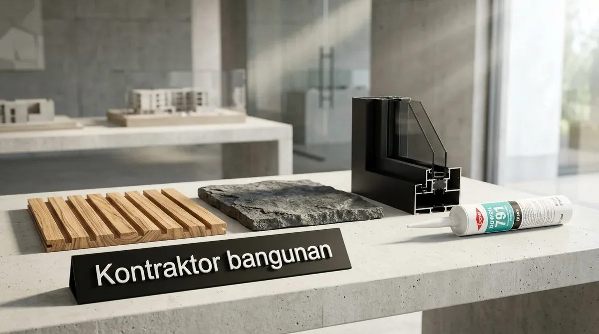

Apa Saja Elemen Kunci Fasad Rumah Modern Tropis di Surabaya?
Elemen kunci mencakup secondary skin penahan panas matahari, kanopi kantilever elegan, kombinasi tekstur batu/kayu, serta aksen bukaan kaca tempered lebar.
Surabaya memiliki paparan sinar matahari yang intens sepanjang tahun. Berdasarkan studi arsitektur bioklimatik perkotaan 2025/2026, penggunaan secondary skin pada fasad rumah di Surabaya mampu menurunkan temperatur dinding dalam hingga 4,2°C, sekaligus memberikan privasi dari pandangan jalan.
Elemen-elemen favorit dalam renovasi fasad Kontraktor Bangunan:
- Secondary Skin Louver / Kisi-Kisi: Terbuat dari bilah aluminium atau WPC tahan rayap yang memecah sinar matahari langsung namun tetap mengalirkan angin sepoi.
- Kanopi Minimalis Tanpa Tiang: Pemasangan kanopi cantilever kaca tempered atau spandek berperedam dengan rangka besi hollow galvanis anti-karat.
- Dinding Aksen Tekstur (Feature Wall): Mengombinasikan cat tekstur kamprot/semen ekspos dengan batu alam andesit alur lurus atau granit slab eksterior.
Bagaimana Memilih Material Fasad yang Awet di Iklim Pesisir Surabaya?
Pilih material berstandar eksterior tinggi: cat elastomeric tahan UV, profil aluminium tahan korosi garam, dan panel komposit anti-rayap.
Jangan menggunakan material interior untuk area fasad luar. Berikut rekomendasi material terbaik untuk ketahanan jangka panjang:
1. Cat Eksterior Kelas Premium (Elastomeric Weatherproof)
Gunakan cat dengan formula pelindung sinar UV tinggi yang memiliki daya tutup elastis menutup retak rambut dan menolak debu polusi kota.
2. Panel Pengganti Kayu (WPC / Conwood / Fiber Semen)
Kayu alami rawan lapuk dan dimakan rayap di iklim lembap. Panel WPC memberikan tampilan serat kayu alami yang mewah tanpa perlu perawatan pernis berkala.
3. Kusen Aluminium Powder Coating
Kusen aluminium profil 3 atau 4 inci merek ternama tahan terhadap pemuaian cuaca ekstrem dan tidak akan keropos terkena udara bergaram pesisir Surabaya.

Proses pemasangan kisi-kisi secondary skin aluminium dan pengerjaan dinding semen ekspos fasad.
Tabel Komparasi Biaya Paket Renovasi Fasad di Surabaya
Tabel komparasi menyajikan estimasi biaya, item pekerjaan, dan durasi renovasi fasad rumah sesuai dengan konsep desain yang dipilih.
| Konsep Desain Fasad | Estimasi Biaya Total | Item Pekerjaan Utama | Durasi Pengerjaan | Efek Peningkatan Estetika |
|---|---|---|---|---|
| Facelift Minimalis Bersih | Rp20.000.000 – Rp40.000.000 | Cat eksterior 3 warna, lis profil semen, lampu up-down, kanopi alderon baru | 1 – 2 Minggu | Rapi, Bersih, Segar |
| Modern Tropis Natural | Rp45.000.000 – Rp85.000.000 | Panel Conwood serat kayu, batu andesit dinding, kisi aluminium, taman depan | 2 – 3 Minggu | Mewah, Sejuk, Bernilai Tinggi |
| Industrial Contemporary | Rp35.000.000 – Rp70.000.000 | Dinding semen kamprot ekspos, plat perforated metal, baja WF kanopi, kaca tempered | 2 – 3 Minggu | Maskulin, Modern, Trendy |
| Luxury Glass & Marble | Rp90.000.000 – Rp175.000.000 | Granit slab dinding 120x240, tirai kaca tempered, pintu pivot kayu solid, lampu strip LED | 3 – 5 Minggu | Prestisius, Mewah, Eksklusif |
- Perhatikan Kemiringan Talang Fasad: Jangan membuat talang air kantilever yang datar. Pastikan ada kemiringan minimal 2-3% menuju pipa pembuangan air hujan (downpipe) tersembunyi agar air tidak meluap.
- Gunakan Sealant Polyurethane Khusus Luar: Pada pertemuan kusen jendela dengan dinding plesteran, gunakan sealant fleksibel berbasis PU (bukan silikon asam murah) agar tidak retak terkena panas matahari.
- Buat Visual 3D Terlebih Dahulu: Jangan pernah memulai pembongkaran fasad sebelum melihat render 3D dari berbagai sudut pandang jalan raya.
Pertanyaan yang Sering Diajukan (FAQ)
Kesimpulan Praktis
Renovasi fasad adalah jalan pintas paling efektif untuk meningkatkan nilai estetika, kenyamanan termal, dan prestise hunian Anda di Surabaya. Konsultasikan tampak depan rumah impian Anda hari ini.